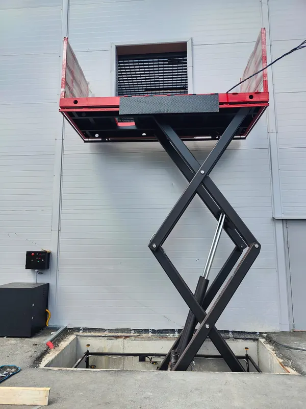

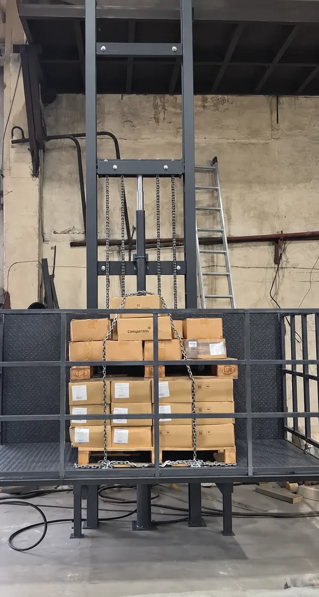

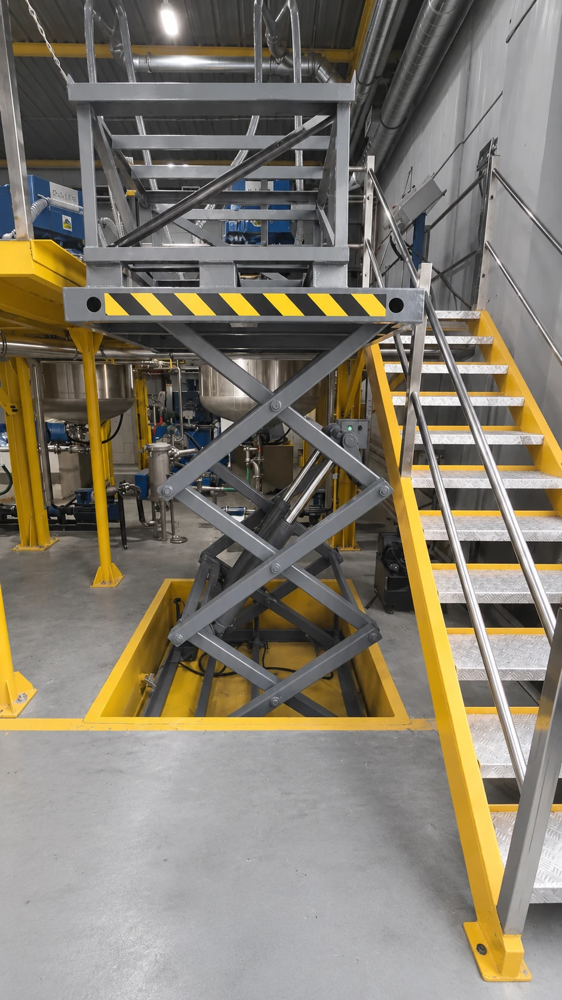

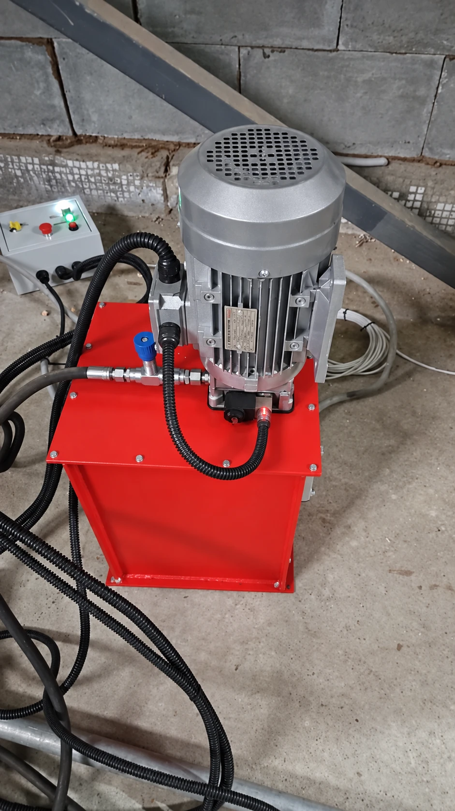

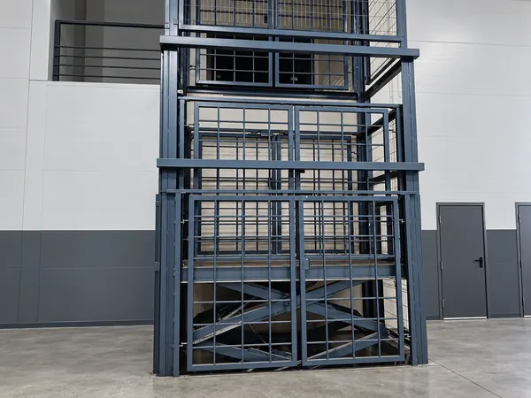

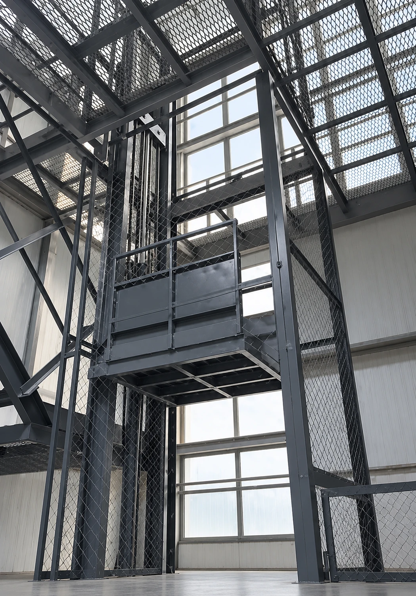

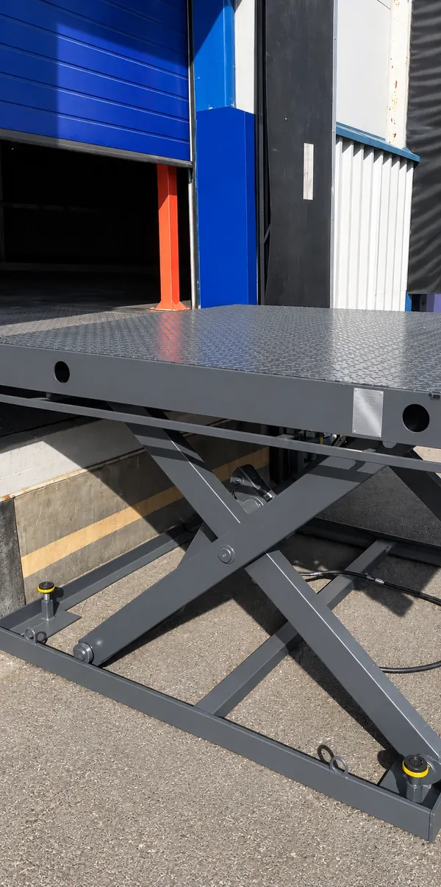

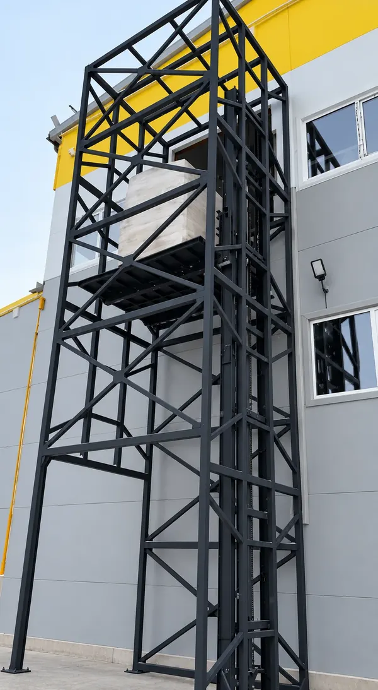

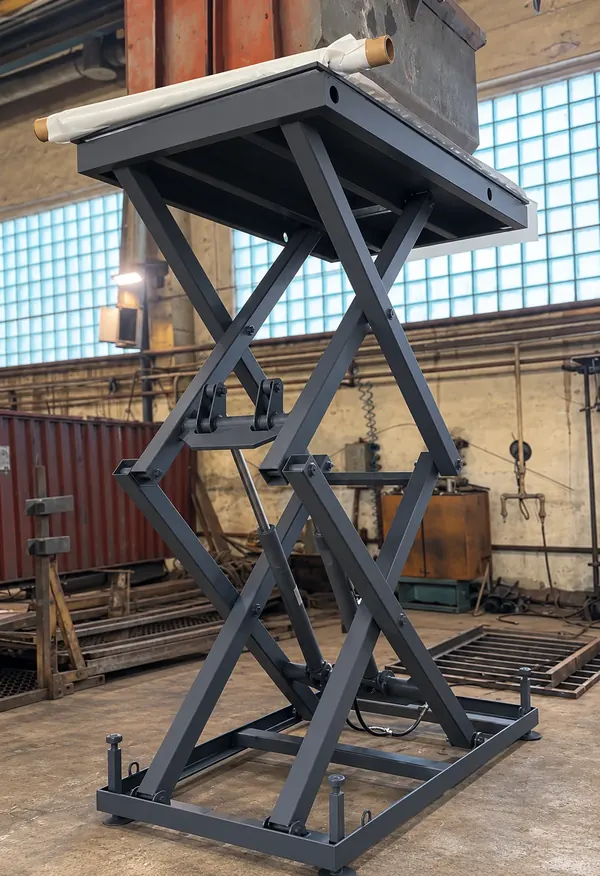

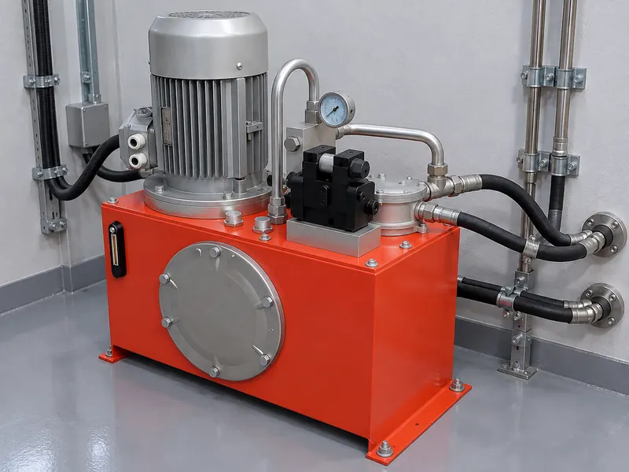

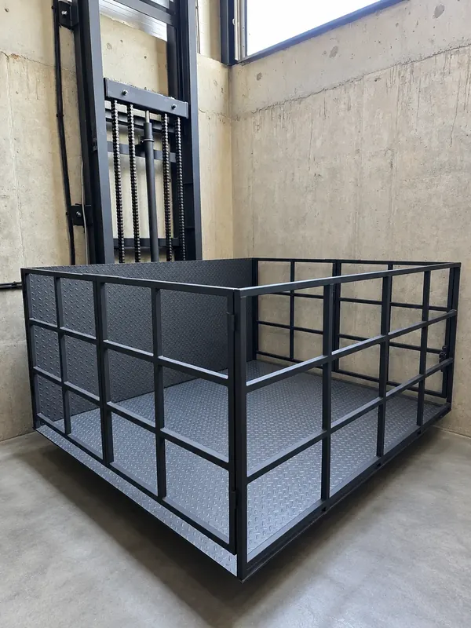

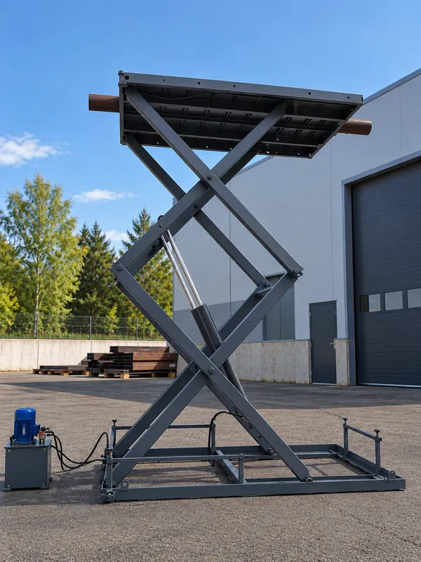

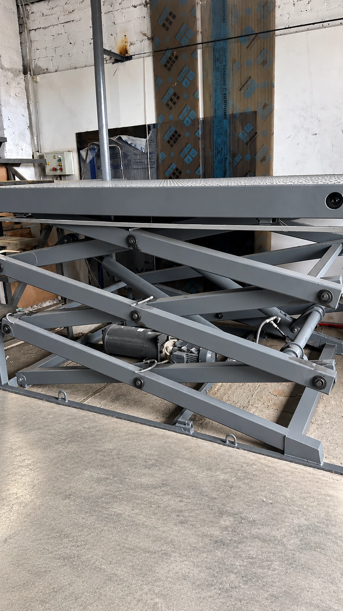

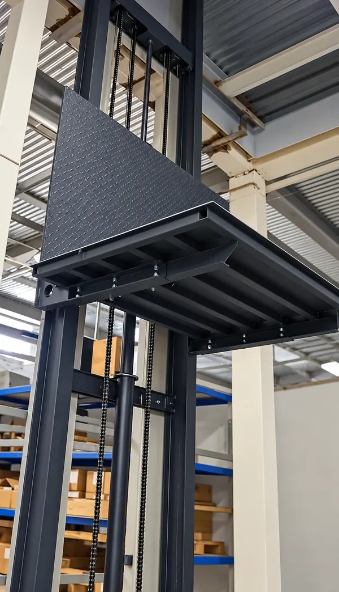

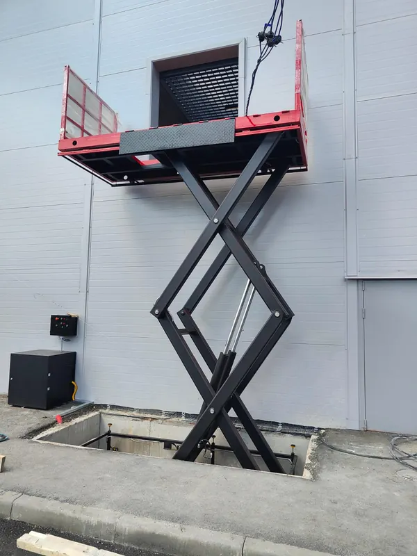
Как растёт: когда появятся города, добавится второй ряд фильтров «по региону» и карта. Каждое фото ведёт на свою модель, а модель ссылается сюда: для поисковиков это связка страниц. Цифры в шапке для примера.